TCP 数据的发送和接收
实验流程来自 知识星球：程序员踩坑案例分享
TCP 超时重传
TCP 基于时间的重传
vm-1
$ sudo tcpdump -s0 -X -nn "tcp port 9527" -w vm-1-tcp-send-receive-time-retries.pcap --print
vm-1-tcp-send-receive-time-retries.pcap
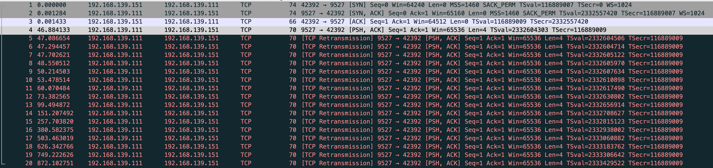
当连接建立好后，vm-2 拦截 vm-1 发的包
$ sudo iptables -A INPUT -p tcp --sport 9527 -j DROP
vm-1 发送数据
$ nc -k -l 192.168.139.111 9527
abc
abc
abc
$ while true;do sudo netstat -anpo|grep 9527|grep -v LISTEN; sleep 1;done
...
tcp 0 4 192.168.139.111:9527 192.168.139.151:37506 ESTABLISHED 303/nc on (3.14/15/0)
tcp 0 4 192.168.139.111:9527 192.168.139.151:37506 ESTABLISHED 303/nc on (2.12/15/0)
tcp 0 4 192.168.139.111:9527 192.168.139.151:37506 ESTABLISHED 303/nc on (1.10/15/0)
tcp 0 4 192.168.139.111:9527 192.168.139.151:37506 ESTABLISHED 303/nc on (0.07/15/0)
tcp 0 4 192.168.139.111:9527 192.168.139.151:37506 ESTABLISHED 303/nc on (0.00/15/0)
tcp 0 4 192.168.139.111:9527 192.168.139.151:37506 ESTABLISHED 303/nc on (0.00/15/0)
能看到重传了 15 次，但在抓包里看到了 16 个重传包
tcp_retries2 - INTEGER
This value influences the timeout of an alive TCP connection, when RTO retransmissions remain unacknowledged. Given a value of N, a hypothetical TCP connection following exponential backoff with an initial RTO of TCP_RTO_MIN would retransmit N times before killing the connection at the (N+1)th RTO.
The default value of 15 yields a hypothetical timeout of 924.6 seconds and is a lower bound for the effective timeout. TCP will effectively time out at the first RTO which exceeds the hypothetical timeout. If tcp_rto_max_ms is decreased, it is recommended to also change tcp_retries2.
RFC 1122 recommends at least 100 seconds for the timeout, which corresponds to a value of at least 8.
第一个包其实不算做重传，而是对端在 rto 时间没有回复，然后触发重传
47.086654-46.884133=0.202521
$ sudo sysctl net.ipv4.tcp_retries2
net.ipv4.tcp_retries2 = 15
文中对 RTT 和 RTO 的描述
RTT（Round Trip Time）：指一个数据包从发出去到回来的时间
RTO（Retransmission TimeOut）：指的是重传超时的时间
linux 中有 TCP_RTO_MIN 内核参数
tcp_rto_min_us - INTEGER
Minimal TCP retransmission timeout (in microseconds). Note that the rto_min route option has the highest precedence for configuring this setting, followed by the TCP_BPF_RTO_MIN and TCP_RTO_MIN_US socket options, followed by this tcp_rto_min_us sysctl.
The recommended practice is to use a value less or equal to 200000 microseconds.
Possible Values: 1 - INT_MAX
Default: 200000
$ sudo sysctl net.ipv4.tcp_rto_min_us
net.ipv4.tcp_rto_min_us = 200000
具体的 rto 是根据 TCP_RTO_MIN 计算出的，也能查看到
$ sudo ss -tip|grep -A 1 9527
ESTAB 0 0 192.168.139.111:9527 192.168.139.151:57060 users:(("nc",pid=303,fd=4))
cubic wscale:10,10 rto:201 rtt:0.078/0.039 mss:1448 pmtu:1500 rcvmss:536 advmss:1448 cwnd:10 segs_in:2 send 1.49Gbps lastsnd:21909 lastrcv:21909 lastack:21909 pacing_rate 2.97Gbps delivered:1 app_limited rcv_space:14480 rcv_ssthresh:64088 minrtt:0.078 snd_wnd:64512
当从 vm-1 发送数据到 vm-2 再次查看 rto，重试后会增加的
$ sudo ss -tip|grep -A 1 9527
ESTAB 0 4 192.168.139.111:9527 192.168.139.151:57060 users:(("nc",pid=303,fd=4))
cubic wscale:10,10 rto:25728 backoff:7 rtt:0.078/0.039 ato:40 mss:1448 pmtu:1500 rcvmss:536 advmss:1448 cwnd:1 ssthresh:7 bytes_sent:36 bytes_retrans:32 bytes_received:4 segs_out:18 segs_in:11 data_segs_out:9 data_segs_in:9 send 149Mbps lastsnd:11529 lastrcv:42622 lastack:16135 pacing_rate 297Mbps delivered:1 app_limited busy:38299ms unacked:1 retrans:1/8 lost:1 rcv_space:14480 rcv_ssthresh:64088 minrtt:0.078 snd_wnd:64512
TCP 快速重传
$ sudo tcpdump -s0 -X -nn "tcp port 9527" -w vm-1-tcp-send-receive-dupack3-wrong.pcap --print
vm-1-tcp-send-receive-dupack3-wrong.pcap
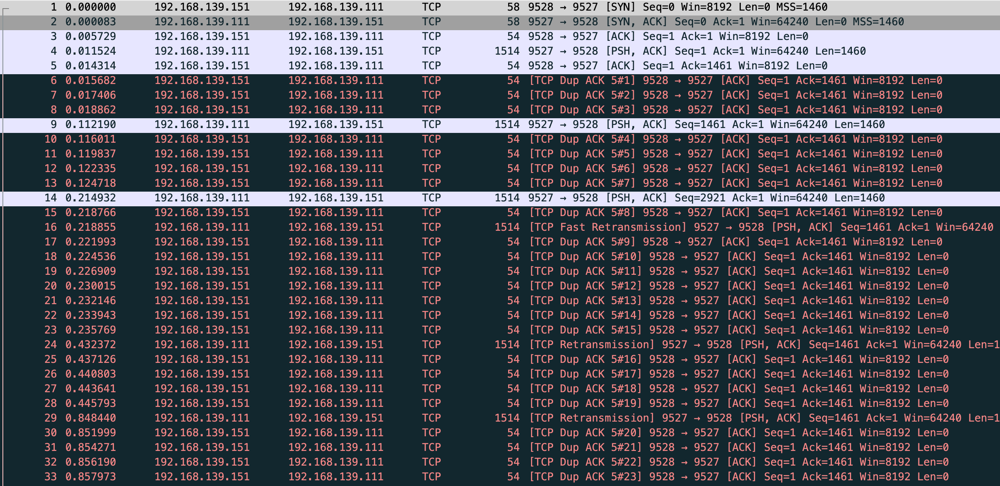
确实能看到 TCP Fast Retransmission 但是和文章中确不一样，vm-1 的数据没发完 vm-2 就在发 TCP Dup ACK，在 fast 前已经发了 7 个 dup ack，根据 net.ipv4.tcp_reordering 默认是3，也就是发 3 次 dup ack 才会快速重传，一开始猜测是我本地两台虚拟机传输速度太快的原因，这里贴下 vm-1 server 和 vm-2 client 的代码
测试前需要在 vm-2 drop 发送给 vm-1 的 rst 包
$ sudo iptables -A OUTPUT -p tcp --tcp-flags RST RST --dport 9527 -j DROP
vm-1
import socket
import time
def start_server(host, port, backlog):
server = socket.socket(socket.AF_INET, socket.SOCK_STREAM)
server.bind((host, port))
server.listen(backlog)
client, _ = server.accept()
client.setsockopt(socket.IPPROTO_TCP, socket.TCP_NODELAY, 1) # 禁用 Nagle 算法
client.sendall(b"a" * 1460)
time.sleep(0.1) # 避免协议栈合并包的方式，不严谨但是凑合能工作
client.sendall(b"b" * 1460)
time.sleep(0.1)
client.sendall(b"c" * 1460)
time.sleep(0.1)
client.sendall(b"d" * 1460)
time.sleep(0.1)
client.sendall(b"e" * 1460)
time.sleep(0.1)
client.sendall(b"f" * 1460)
time.sleep(0.1)
client.sendall(b"g" * 1460)
time.sleep(10000)
if __name__ == '__main__':
start_server('192.168.139.111', 9527, 8)
后面将 vm-1 server 的 time.sleep(0.1) 注释，保持 iptables 规则，重新测试
$ sudo tcpdump -s0 -X -nn "tcp port 9527" -w vm-1-tcp-send-receive-dupack3.pcap --print
vm-1-tcp-send-receive-dupack3.pcap
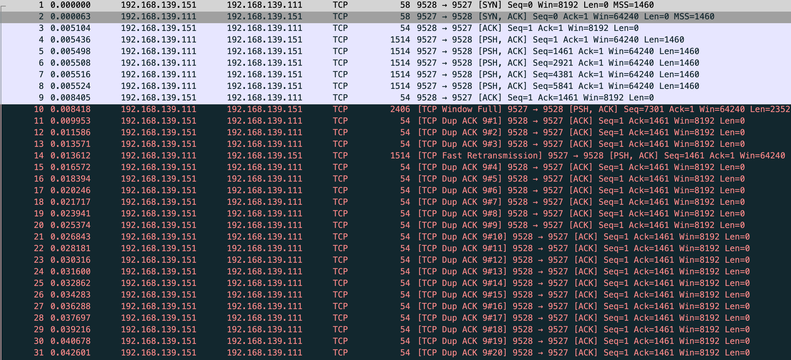
能看到这三个 TCP Dup ACK 的序列号全是 1566486280
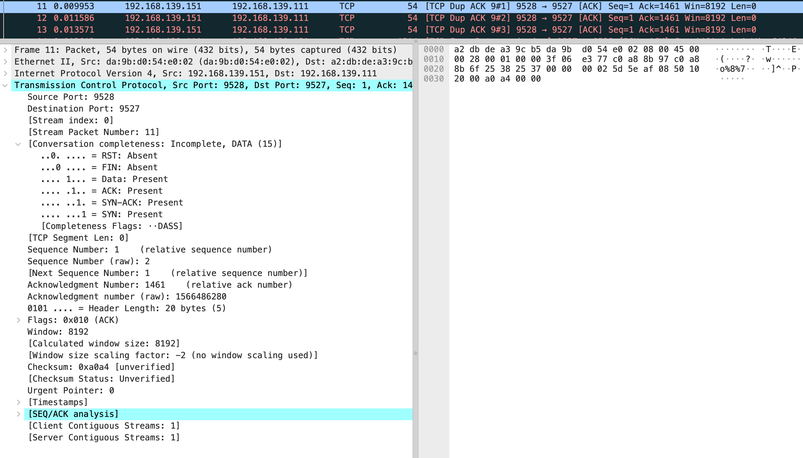
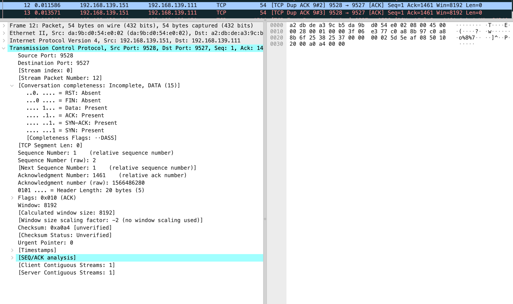
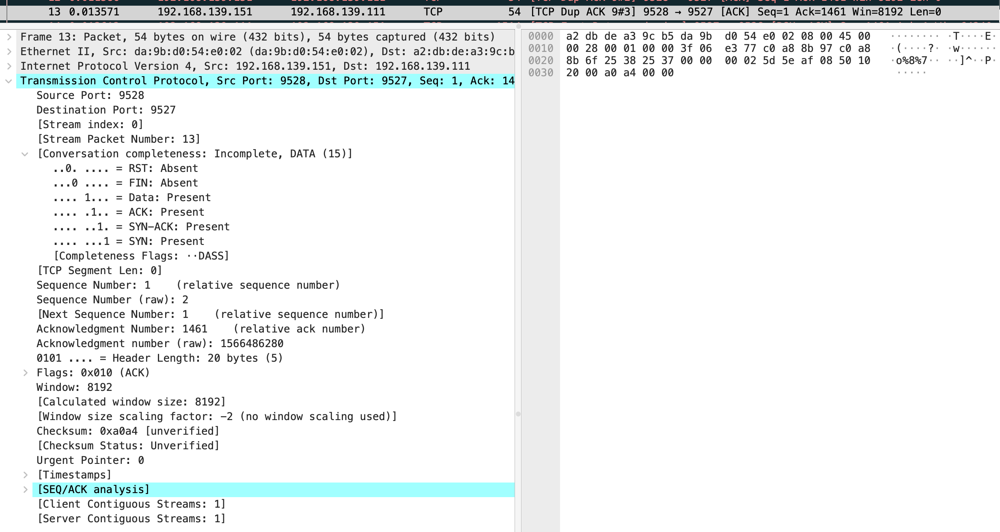
然后快速重传发送了 seq 为 1566486280 的包，这里和文中有一些不一样，我的抓包显示第 9 个包是 vm-2 回复了 ack 对应第 4 个发送数据的包。
假如这时你断开 vm-1 的 server，你会发现 vm-1 和 vm-2 本来为 established 的状态变为 FIN1，但是 vm-1 还是在继续重传此时是基于 rto 的重传会发送 15 次，很 TCP。
$ sudo netstat -anpo|grep -E "Recv|9527"
Proto Recv-Q Send-Q Local Address Foreign Address State PID/Program name Timer
tcp 0 0 192.168.139.111:9527 0.0.0.0:* LISTEN 698/python3 off (0.00/0/0)
tcp 0 8760 192.168.139.111:9527 192.168.139.151:9528 ESTABLISHED 698/python3 on (108.19/12/0)
$ sudo netstat -anpo|grep -E "Recv|9527"
Proto Recv-Q Send-Q Local Address Foreign Address State PID/Program name Timer
tcp 0 8761 192.168.139.111:9527 192.168.139.151:9528 FIN_WAIT1 - on (102.22/12/0)
$ sudo netstat -anpo|grep -E "Recv|9527"
Proto Recv-Q Send-Q Local Address Foreign Address State PID/Program name Timer
tcp 0 8761 192.168.139.111:9527 192.168.139.151:9528 FIN_WAIT1 - on (82.74/12/0)
这里能看到快速重传和基于时间重传的差距
快速

基于时间
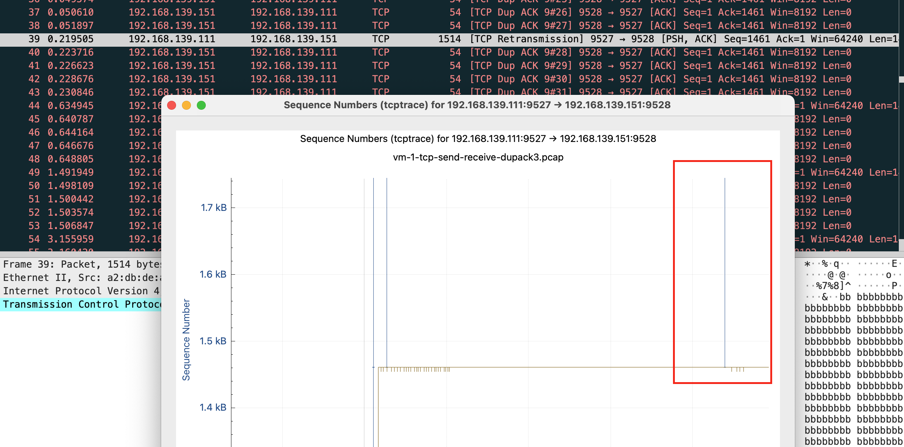
在测试下，修改 net.ipv4.tcp_reordering
$ sudo sysctl net.ipv4.tcp_reordering
net.ipv4.tcp_reordering = 3
$ sudo sysctl -w net.ipv4.tcp_reordering=1
net.ipv4.tcp_reordering = 1
$ sudo tcpdump -S -s0 -X -nn "tcp port 9527" -w vm-1-tcp-send-receive-dupack1.pcap --print
vm-1-tcp-send-receive-dupack1.pcap
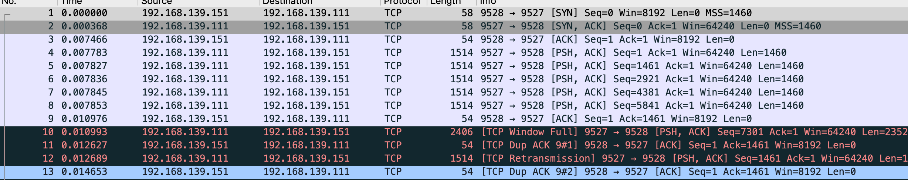
TCP Selective Acknowledgment（SACK）
$ sudo tcpdump -S -s0 -X -nn "tcp port 9527" -w vm-1-tcp-send-receive-scak.pcap --print
vm-1-tcp-send-receive-scak.pcap
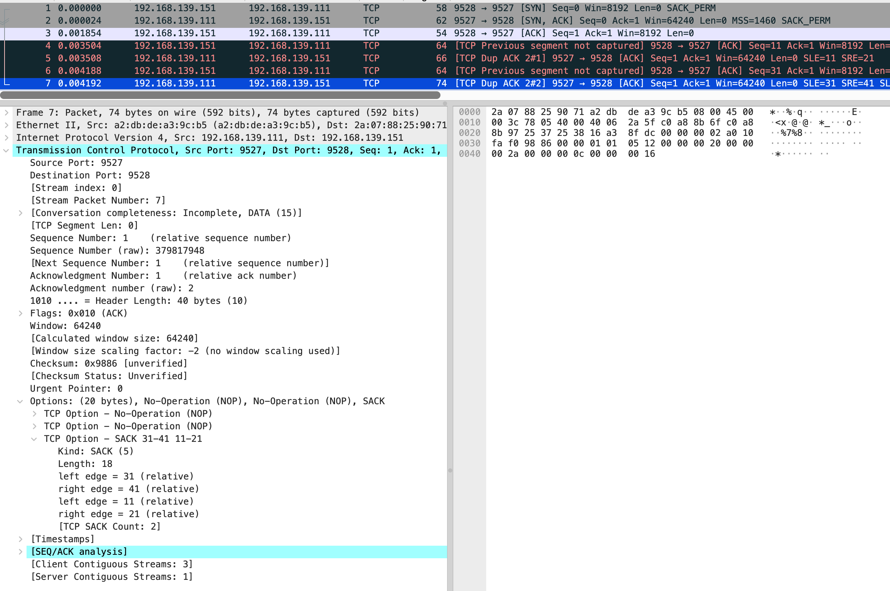
vm-2 的 iptables 规则还是要保持
vm-1
$ nc -k -l 192.168.139.111 9527
vm-2
import time
from scapy.all import *
from scapy.layers.inet import *
def main():
ip = IP(dst="192.168.139.111")
myself_seq = 1
tcp = TCP(sport=9528, dport=9527, flags='S', seq=myself_seq, options=[("SAckOK", '')])
print("send SYN, seq=0")
resp = sr1(ip/tcp, timeout=2)
if not resp:
print("recv timeout")
return
resp_tcp = resp[TCP]
if 'SA' in str(resp_tcp.flags):
recv_seq = resp_tcp.seq
recv_ack = resp_tcp.ack
print(f"received SYN, seq={recv_seq}, ACK={recv_ack}")
myself_seq += 1
send_ack = recv_seq + 1
tcp = TCP(sport=9528, dport=9527, flags='A', seq=myself_seq, ack=send_ack)
print(f"send ACK={send_ack}")
send(ip/tcp)
# 特意注释掉，让发的数据有空洞
# send data
# payload = b"a" * 10
# tcp = TCP(sport=9528, dport=9527, flags='A', seq=myself_seq, ack=send_ack)
# send(ip/tcp/payload)
myself_seq += 10
payload = b"b" * 10
tcp = TCP(sport=9528, dport=9527, flags='A', seq=myself_seq, ack=send_ack)
send(ip/tcp/payload)
myself_seq += 10
# 特意注释掉，让发的数据有空洞
# payload = b"c" * 10
# tcp = TCP(sport=9528, dport=9527, flags='A', seq=myself_seq, ack=send_ack)
# send(ip/tcp/payload)
myself_seq += 10
payload = b"d" * 10
tcp = TCP(sport=9528, dport=9527, flags='A', seq=myself_seq, ack=send_ack)
send(ip/tcp/payload)
elif 'R' in str(resp_tcp.flags):
print(f"received RST")
else:
print("received different TCP flags")
time.sleep(100)
if __name__ == "__main__":
main()
这时 vm-2 是作为发送端，原文有些没法理解，问了 gpt 给出了关于发送数据空洞和 vm-1 发送的 sack 选项
“让数据有空洞”到底是什么意思（网络上发生了什么）
普通 TCP 顺序数据到达时，接收端按序累计确认（cumulative ACK），ACK 的值是最后连续无缺口字节的下一个序号。
当你不发送某些中间段（比如注释掉的 a、c），但发送了其后的段 b、d 时，接收端会收到 “out-of-order” 数据：它能接收并缓存 b、d，但不能推进累计 ACK，因为 a 缺失阻断了连续序列。
若接收端支持 SACK，它会在返回的 ACK 中带上 SACK 选项，告知发送端“我已经收到了哪些非连续的块（例如 [seq_b, seq_b+9], [seq_d, seq_d+9]）”，从而允许发送端只重传缺失的块（a, c），而不用重传整条流。
简短：你制造的“空洞”就是模拟中间包丢失 / 未发送 的场景，用来触发 SACK 的行为（接收端用 SACK 报告已收到的非连续数据块）。
结合抓包来看，vm-2 发送了第 4 个包 是个 ack，seq number 是 11，next seq number 应该是 21，第 6 个包 seq number 32，next seq number 是 41
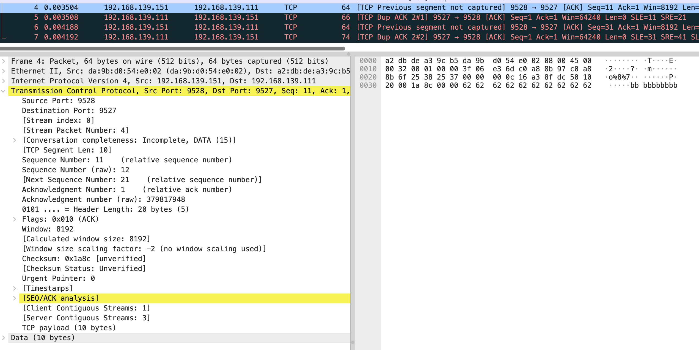
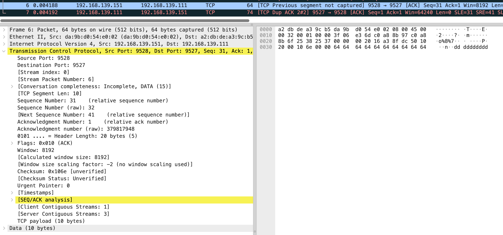
在分别看 5 和 7 包的 sack
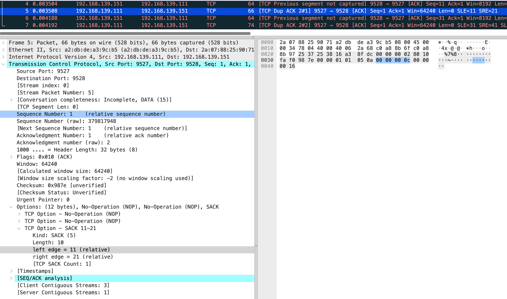
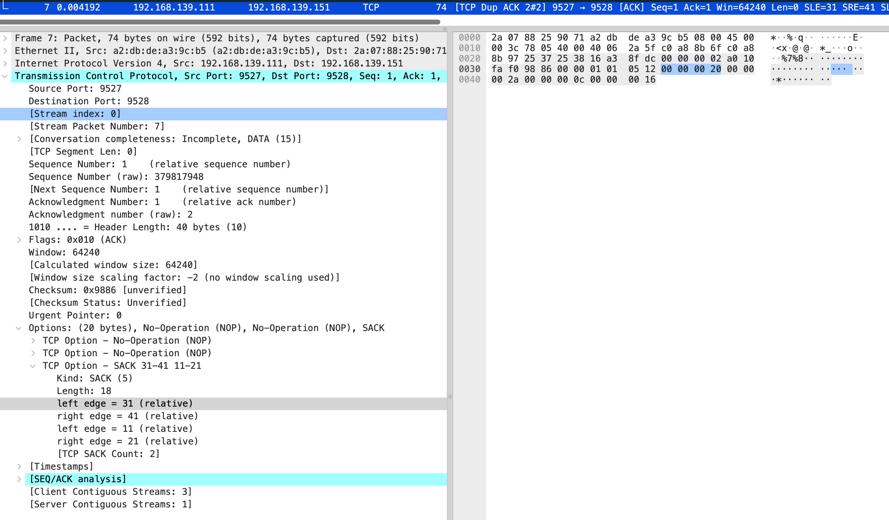
也就是缺失 0-10 和 21-30 的包，需要 vm-1 重新发送。
这部分后面如果碰到不是模拟的场景，和缺失的场景对比下会更好。
TCP 窗口管理
默认开启 gso/tso
$ sudo tcpdump -S -s0 -X -nn "tcp port 9527" -w vm-1-tcp-window-scale.pcap --print
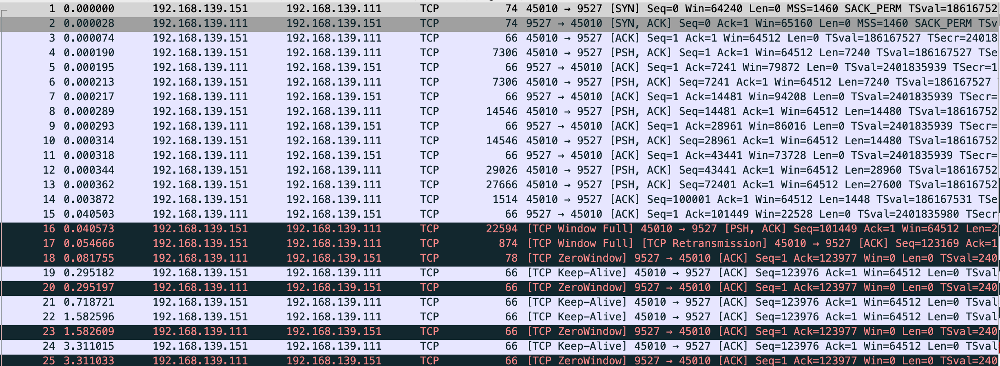
不读数据的服务端和循环发送的客户端代码
vm-1
import socket
import time
def start_server(host, port, backlog):
server = socket.socket(socket.AF_INET, socket.SOCK_STREAM)
server.bind((host, port))
server.listen(backlog)
client, _ = server.accept()
time.sleep(10000)
if __name__ == '__main__':
start_server('192.168.139.111', 9527, 8)
-----------------------------------------------------------------
vm-2
import socket
import time
def start_client(host, port):
client = socket.socket(socket.AF_INET, socket.SOCK_STREAM)
client.connect((host, port))
client.setblocking(False)
send_size = 0
data = b"a" * 100000
while True:
try:
size = client.send(data)
if size > 0:
send_size += size
print(f"send_size: {send_size}")
except BlockingIOError:
time.sleep(0.1)
pass
if __name__ == '__main__':
start_client('192.168.139.111', 9527)
能看到 vm-2 发的包基本都超过 mtu 大小，检查 generic-segmentation-offload/generic-receive-offload/tcp-segmentation-offload，vm-1 和 vm-2 是一样的。
$ sudo ethtool -k eth0|grep -E "generic-segmentation-offload|generic-receive-offload"
generic-segmentation-offload: on
generic-receive-offload: off
$ sudo ethtool -k eth0|grep tcp-segmentation-offload
tcp-segmentation-offload: on
gpt 解释如下，简单来说会把包合并发送
| 特性 | 方向 | 执行位置 | 含义 | 是否硬件相关 |
|---|---|---|---|---|
| TSO (TCP Segmentation Offload) | 发送 | 网卡硬件 | TCP 大包分片由网卡完成 | ✅ 硬件 |
| GSO (Generic Segmentation Offload) | 发送 | 内核/驱动 | 软件模拟 TSO 的功能 | ⚙️ 软件 |
| GRO (Generic Receive Offload) | 接收 | 内核/驱动 | 把多个包合并成一个大的 | ⚙️ 软件 |
同时能看到 vm-1 的 Recv-Q 和 vm-2 的 Send-Q 都有堆积，这里恰好能和 TCP 连接的建立 中最后的 nginx 实验部分关联上，云上的 nginx 发送给 vm-2 数据但 vm-2 还没回 ack，Send-Q 会有数值
此代码是 vm-2 一直发送，vm-1 接收但不读取数据
vm-1
$ sudo netstat -anpo|grep -E "Recv|9527"
Proto Recv-Q Send-Q Local Address Foreign Address State PID/Program name Timer
tcp 0 0 192.168.139.111:9527 0.0.0.0:* LISTEN 335/python3 off (0.00/0/0)
tcp 123976 0 192.168.139.111:9527 192.168.139.151:45010 ESTABLISHED 335/python3 off (0.00/0/0)
-----------------------------------------------------------------
vm-2
$ sudo netstat -anpo|grep -E "Recv|9527"
Proto Recv-Q Send-Q Local Address Foreign Address State PID/Program name Timer
tcp 0 706624 192.168.139.151:45010 192.168.139.111:9527 ESTABLISHED 295/python3 probe (3.53/0/0)
关闭 gso/tso
两边机器都关闭
$ sudo ethtool -K eth0 gso off
$ sudo ethtool -K eth0 tso off
$ sudo tcpdump -S -s0 -X -nn "tcp port 9527" -w vm-1-tcp-window-scale-disable-gso-tso.pcap --print
vm-1-tcp-window-scale-disable-gso-tso.pcap
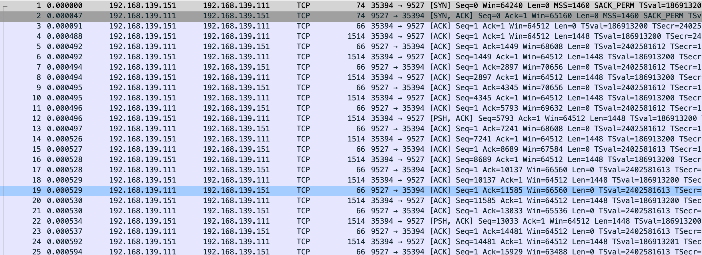
这回变正常了，数据该堆积还是堆积，不过有一点 关闭 gso/tso 后抓的包比未关闭要多将近 100 个左右，效率较低。
窗口变化
$ sudo tcpdump -S -s0 -X -nn "tcp port 9527" -w vm-1-tcp-window-scale-recv.pcap --print
vm-1-tcp-window-scale-recv.pcap
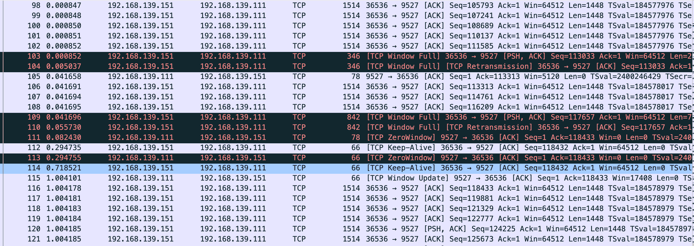
变更服务端代码
import socket
import time
def start_server(host, port, backlog):
server = socket.socket(socket.AF_INET, socket.SOCK_STREAM)
server.bind((host, port))
server.listen(backlog)
client, _ = server.accept()
client.setsockopt(socket.IPPROTO_TCP, socket.TCP_NODELAY, 1) # 禁用 Nagle 算法
while True:
for i in range(5):
client.recv(4096)
time.sleep(1)
if __name__ == '__main__':
start_server('192.168.139.111', 9527, 8)
感觉这个图表有助于理解，这里放下原文
这里简单解释下这个图，X 轴是时间，Y 轴是 Sequence Number，绿色线是接收方的 window size，蓝色线是发送的包（捕获到的包），黄色的线是 ACK 过的 Sequence Number 值。那么从图上就可以看出来，每当接收方的 window size 增大的时候，立即就有包发送出去了。当 window size 为 0（线平了）的时候，发送立即就停止了。所以这个图告诉我们这个传输是接收方的瓶颈，是接收方通过 window size 的关闭对发送端进行了限流。
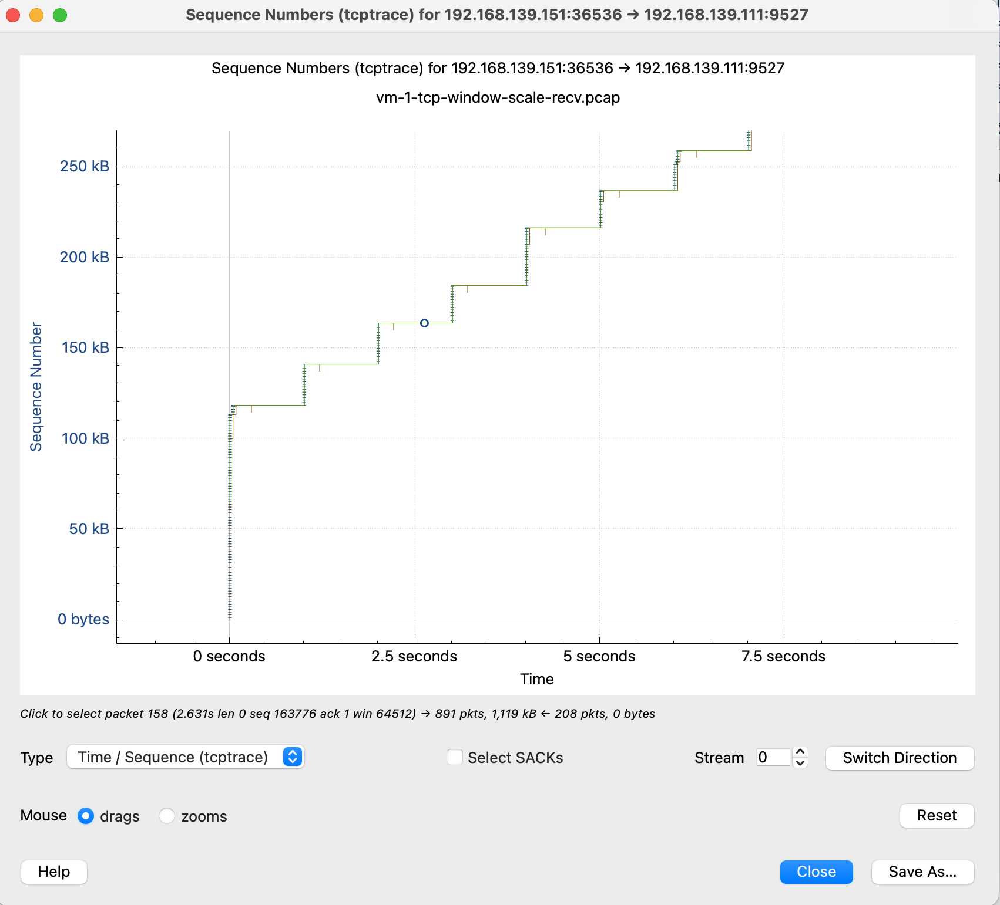
这张图鼠标可点击的点更多，比如我这里点 x 轴的点，会直接跳转到对应的包 Frame 112 是 keep-alive 下一个包 113 是 TCP ZeroWindow，从 116 到 132 都是 vm-2 给 vm-1 发送数据 代表y 轴上升的线证明有数据发送，113-116 表示 vm-1 没有窗口接收了，参照代码正是读一会停一会，换到正常业务就是服务端处理的比较慢
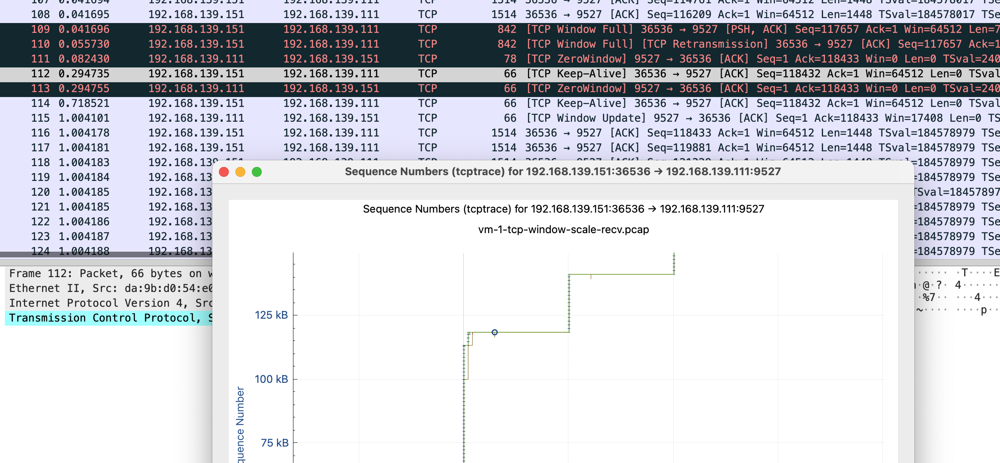
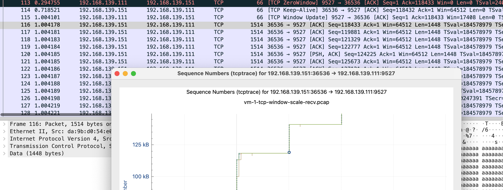
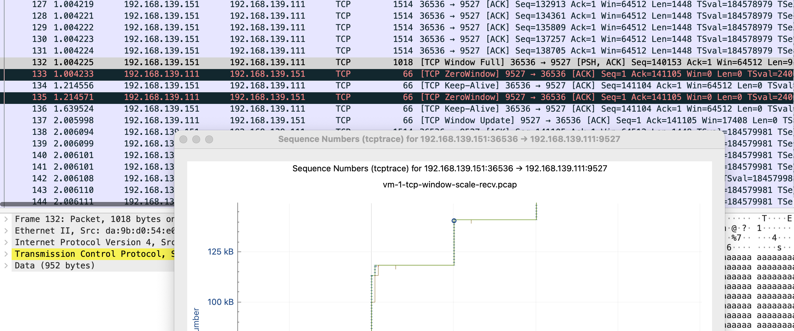
tcp window full - tcp 窗口已满
tcp zerowindow - 接收方无法处理更多数据
tcp window update - 有缓冲区可以处理，请继续发送
110 号包到 116 是第一段 x 轴线平了未发送数据阶段，111 是 vm-1 告诉 vm-2 我无法接收更多数据，直到 115 vm-1 发送 window update，跟 vm-2 说你可以发送数据了。
wireshark-tcp-window-zero-update-full
TCP 拥塞控制
此部分暂时不做测试，接触的较少。